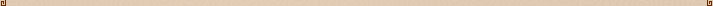
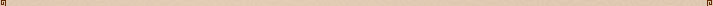
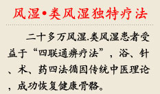
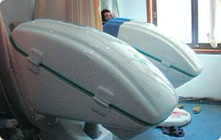

如何预防风湿类风湿病
责任编辑：上海西郊骨科医院 日期：2011-12-1 来源：上海西郊骨科医院（原创文章,禁止转载）
-
- 【风湿病的病因】风湿性疾病关节痛的病因
- 【风湿病的症状】风湿性疾病关节痛的病因
- 【风湿病的危害】风湿性疾病关节痛的病因
- 【风湿病的治疗】风湿性疾病关节痛的病因
- 【风湿病的预防】风湿性疾病关节痛的病因
对于风湿类风湿病的发病率越来越频繁也越来越年轻化，如何预防风湿类风湿病就是一个热点话题。我们都知道，风湿类风湿病并不是一蹴即至，它是慢慢发展而来的。如果我们能够早点对风湿类风湿病进行预防那么就可以避免病情的发生以及病情的恶化。
如何预防风湿类风湿病？
风湿类风湿病是一种常见的风湿免疫性疾病，以慢性、对称性、多滑膜关节炎和关节外病变为主要临床表现。该病好发于手、腕、足等小关节，反复发作，呈对称分布。早期有关节红肿热痛和功能障碍，晚期关节可出现不同程度的僵硬畸形，并伴有骨和骨骼肌的萎缩，极易致残。因此，在日常生活中一定要做好预防风湿类风湿病工作，并着重做好以下几个方面：
1）、预防控制感染：
有些类风湿性关节炎是在患了扁桃体炎、鼻窦炎、咽峡炎、龋齿等感染性疾病之后而发病的，目前认为这是人体对这些感染的病原体发生了免疫反应而引起本病。平时应加强体育锻炼，增强体质，一旦出现感染，要积极治疗。
2）、注意保护关节：
要避免因事故或过度使用引起的关节损伤，尽量不穿高跟鞋，避免关节受到反复的冲击力或扭力。如果有半月板损伤，应及时通过关节镜进行修补或缝合；有关节韧带损伤要及时治疗；关节内骨折要手术解剖复位；如果关节周围有畸形，要及时手术矫形。这些都对骨关节炎有一定的预防作用。
3）、防寒防潮：
早春应注意保暖，尽量选择向阳居室，保持室内清洁干燥，避免潮湿、阴暗的环境；常开窗通风，但避免直接吹风；平时洗手洗脸宜用温水，晚间用热水烫脚，以促进血液循环；关节处要注意保暖，局部可用护膝、护腕、长袜或手套等，鞋袜潮湿应及时更换；避免直接接触冷藏品或冰柜。关节炎患者应密切关注天气变化，尤其应注意关节保暖，避免以上关节炎的发病诱因，就可以减少发病的次数。
4）、合理饮食：
病人宜进食高钙食品以确保骨质代谢的正常需要。老年人钙的摄取量应较一般成年人增加50%左右，即每日成分钙不少于1200毫克，可从牛奶、蛋类、豆制品、蔬菜和水果中补充，必要时可补充钙剂。超体重者宜在控制饮食的同时注意调整饮食结构，减少热量摄入，多食用维生素D含量高的食物，适量补充其他维生素和矿物质，尽量少吃高嘌呤食物，严格忌酒。高嘌呤食物包括动物内脏、海鱼、虾、蟹和肉类等。
做好预防风湿类风湿病工作为身体搭建一个绿色平台，以确保身体处于健康的状态，此外，一旦确诊类风湿病也要及时的进行治疗，以免随着时间的推移给患者的身心造成莫大的伤害，乃至出现瘫痪残疾的现象。那风湿类风湿病能治好吗？有什么好的治疗方法呢？
四联通痹疗法：不开刀、不住院，一次性治疗、愈后永不复发。风湿病虽然难治，但并不是无药可治。
如何预防风湿类风湿病？
风湿类风湿病是一种常见的风湿免疫性疾病，以慢性、对称性、多滑膜关节炎和关节外病变为主要临床表现。该病好发于手、腕、足等小关节，反复发作，呈对称分布。早期有关节红肿热痛和功能障碍，晚期关节可出现不同程度的僵硬畸形，并伴有骨和骨骼肌的萎缩，极易致残。因此，在日常生活中一定要做好预防风湿类风湿病工作，并着重做好以下几个方面：
1）、预防控制感染：
有些类风湿性关节炎是在患了扁桃体炎、鼻窦炎、咽峡炎、龋齿等感染性疾病之后而发病的，目前认为这是人体对这些感染的病原体发生了免疫反应而引起本病。平时应加强体育锻炼，增强体质，一旦出现感染，要积极治疗。
2）、注意保护关节：
要避免因事故或过度使用引起的关节损伤，尽量不穿高跟鞋，避免关节受到反复的冲击力或扭力。如果有半月板损伤，应及时通过关节镜进行修补或缝合；有关节韧带损伤要及时治疗；关节内骨折要手术解剖复位；如果关节周围有畸形，要及时手术矫形。这些都对骨关节炎有一定的预防作用。
3）、防寒防潮：
早春应注意保暖，尽量选择向阳居室，保持室内清洁干燥，避免潮湿、阴暗的环境；常开窗通风，但避免直接吹风；平时洗手洗脸宜用温水，晚间用热水烫脚，以促进血液循环；关节处要注意保暖，局部可用护膝、护腕、长袜或手套等，鞋袜潮湿应及时更换；避免直接接触冷藏品或冰柜。关节炎患者应密切关注天气变化，尤其应注意关节保暖，避免以上关节炎的发病诱因，就可以减少发病的次数。
4）、合理饮食：
病人宜进食高钙食品以确保骨质代谢的正常需要。老年人钙的摄取量应较一般成年人增加50%左右，即每日成分钙不少于1200毫克，可从牛奶、蛋类、豆制品、蔬菜和水果中补充，必要时可补充钙剂。超体重者宜在控制饮食的同时注意调整饮食结构，减少热量摄入，多食用维生素D含量高的食物，适量补充其他维生素和矿物质，尽量少吃高嘌呤食物，严格忌酒。高嘌呤食物包括动物内脏、海鱼、虾、蟹和肉类等。
做好预防风湿类风湿病工作为身体搭建一个绿色平台，以确保身体处于健康的状态，此外，一旦确诊类风湿病也要及时的进行治疗，以免随着时间的推移给患者的身心造成莫大的伤害，乃至出现瘫痪残疾的现象。那风湿类风湿病能治好吗？有什么好的治疗方法呢？
四联通痹疗法：不开刀、不住院，一次性治疗、愈后永不复发。风湿病虽然难治，但并不是无药可治。
如果您或者您的朋友及家人在生活中遇到风湿.类风湿健康方面的困扰，可以通过预约上海西郊骨科医院风湿类风湿病专家帮您答疑解惑。上海西郊骨科医院采用特色疗法四联通痹疗法专业治疗风湿.类风湿相关疾病，助您早日告别风湿类风湿病的困扰。



-
上海西郊骨科医院连续三年成为“全国最受欢迎专业骨科医院”、“全国十佳骨科医院”，并获得“全国百姓公认诚信示范医院”荣誉称号，成为了上海市残疾人福利基金会定点体检基地、中国质量万里行诚信……【详细】
-

上海西郊骨科医院将20余味名贵中药材科学配伍,在熏蒸舱的作用下,熏蒸渗透和药物活血双重作用,能扩张皮肤、肌肉及关节内的血管,明显改善局部血液循环,加速炎性物质的清除,改善患处缺氧状况和理化环境,达到消炎止痛、缓解症状的作用。

包括针刀微手术、激光针等疗法,是上海西郊骨科医院在长期临床实践的基础上研究提炼而成的特殊治疗手段.可以促进血液循环,改变局部炎变,减轻关节水肿,缓解疼痛,达到恢复骨关节运动功能的作用。

上海西郊骨科医院通过对支配免疫系统神经的微创手术,清除慢性非细菌性炎性介质,彻底消除沉积的免疫复合物,同时通过免疫调节,保障其营养供给,从而使机体功能得以恢复,抑制类风湿关节炎、强直性脊柱炎的病理发展,达到治愈的目的。
指因人、因病施药,即根据不同病人的病因、病位、病性分别使用上海西郊骨科医院研制的系列药物,修复因免疫功能紊乱导致的肌纤维损伤和坏死,抑制结缔组织增生、纤维化,改善关节血液循环,增强骨细胞代谢,抗血管内膜增生,增强机体免疫力,达到巩固疗效的目的。